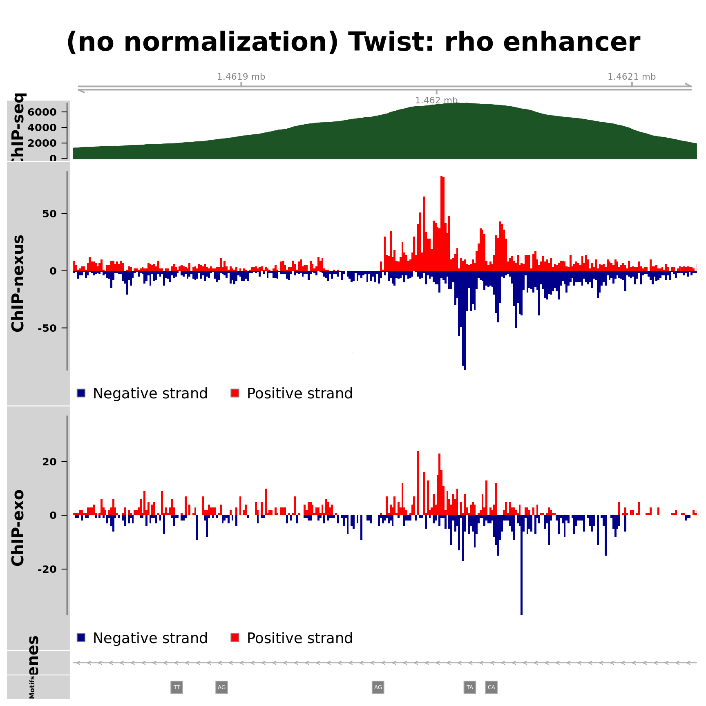

Figure 2: TBP, Dorsal and Twist examples
Project: ChIP-nexus methods paper
Author: Jeff Johnston
Generated: Thu Oct 23 2014, 08:08 PM
Overview
Examples of TBP, Dorsal and Twist binding at single regions
| chr | start | end | name | factor | figure |
|---|---|---|---|---|---|
| chr2L | 2456425 | 2456724 | dpp repressor | dl | 2 |
| chr3L | 1461814 | 1462133 | rho enhancer | dl | 2 |
| chr6 | 133135498 | 133135797 | RPS12 promoter | tbp | 2 |
| chr3L | 1461814 | 1462133 | rho enhancer | twi | 2 |
Dorsal (embryos)


Twist (embryos)

TBP (human)

Session information
For reproducibility, this analysis was performed with the following R/Bioconductor session:
R version 3.1.1 (2014-07-10)
Platform: x86_64-pc-linux-gnu (64-bit)
locale:
[1] LC_CTYPE=en_US.UTF-8 LC_NUMERIC=C
[3] LC_TIME=en_US.UTF-8 LC_COLLATE=en_US.UTF-8
[5] LC_MONETARY=en_US.UTF-8 LC_MESSAGES=en_US.UTF-8
[7] LC_PAPER=en_US.UTF-8 LC_NAME=C
[9] LC_ADDRESS=C LC_TELEPHONE=C
[11] LC_MEASUREMENT=en_US.UTF-8 LC_IDENTIFICATION=C
attached base packages:
[1] stats4 parallel grid stats graphics grDevices utils
[8] datasets methods base
other attached packages:
[1] digest_0.6.4
[2] yaml_2.1.13
[3] BSgenome.Dmelanogaster.UCSC.dm3_1.4.0
[4] BSgenome_1.34.0
[5] rtracklayer_1.26.1
[6] Biostrings_2.34.0
[7] XVector_0.6.0
[8] TxDb.Dmelanogaster.UCSC.dm3.ensGene_3.0.0
[9] TxDb.Hsapiens.UCSC.hg19.knownGene_3.0.0
[10] GenomicFeatures_1.18.1
[11] AnnotationDbi_1.28.0
[12] Biobase_2.26.0
[13] Gviz_1.10.0
[14] GenomicRanges_1.18.1
[15] GenomeInfoDb_1.2.0
[16] IRanges_2.0.0
[17] S4Vectors_0.4.0
[18] BiocGenerics_0.12.0
[19] xtable_1.7-4
loaded via a namespace (and not attached):
[1] acepack_1.3-3.3 base64enc_0.1-2 BatchJobs_1.4
[4] BBmisc_1.7 BiocParallel_1.0.0 biomaRt_2.22.0
[7] biovizBase_1.14.0 bitops_1.0-6 brew_1.0-6
[10] checkmate_1.5.0 cluster_1.15.3 codetools_0.2-9
[13] colorspace_1.2-4 DBI_0.3.1 dichromat_2.0-0
[16] evaluate_0.5.5 fail_1.2 foreach_1.4.2
[19] foreign_0.8-61 formatR_1.0 Formula_1.1-2
[22] GenomicAlignments_1.2.0 Hmisc_3.14-5 htmltools_0.2.6
[25] iterators_1.0.7 knitr_1.7 lattice_0.20-29
[28] latticeExtra_0.6-26 matrixStats_0.10.3 munsell_0.4.2
[31] nnet_7.3-8 plyr_1.8.1 RColorBrewer_1.0-5
[34] Rcpp_0.11.3 RCurl_1.95-4.3 rmarkdown_0.3.3
[37] R.methodsS3_1.6.1 rpart_4.1-8 Rsamtools_1.18.0
[40] RSQLite_0.11.4 scales_0.2.4 sendmailR_1.2-1
[43] splines_3.1.1 stringr_0.6.2 survival_2.37-7
[46] tools_3.1.1 VariantAnnotation_1.12.1 XML_3.98-1.1
[49] zlibbioc_1.12.0